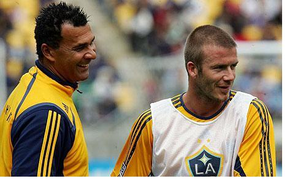
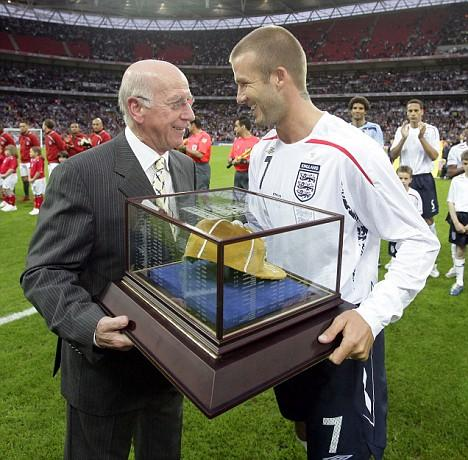

Chương Mười Chín

gười Mỹ ngày càng mất kiên nhẫn. Từ dạo có Beckham, mỗi trận Galaxy thi đấu, dù là sân khách hay sân nhà, dù giá vé bị tăng lên gấp đôi, lượng khán giả đến xem đều cao gấp bội khi xưa, vậy mà chẳng bao giờ thấy thần tượng ra sân. Tuy lẻ tẻ, đây đó bắt đầu xuất hiện những phản ứng tiêu cực. Trên khán đài, đã thấy những băng rôn chế giễu: “Dự bị như Beckham” (Bench it Like Beckham, nhái tên bộ phim nổi tiếng Bend it Like Beckham), hay “David, chào mừng tới nước Mỹ, nơi người ta được trả tiền để chả phải làm gì”.
Về mặt truyền hình, ESPN vẫn giành riêng một máy quay, quay riêng David, nhưng thay vì cảnh David tung hoành sân cỏ, suốt mỗi 90 phút, người xem TV chỉ được chứng kiến cảnh anh ngồi phỗng trên ghế dự bị, buồn buồn thì cột dây giày, tháo vớ ra đi vớ vào, vuốt tóc, xoa mặt! “Beckham Cam là một ý tưởng ngu xuẩn”, bình luận viên – cựu danh thủ Eric Wynalda bức xúc, “Cầu thủ bị chấn thương ngồi ngoài là bình thường, thế mà người ta chĩa máy quay vào David từng giây từng phút. Anh ấy đánh rắm một cái, cả thiên hạ đều thấy. Cũng may mà lúc ảnh ngoáy mũi thì đài truyền hình cắt đi đấy. Kinh khủng thật! Chẳng ai muốn ở trong cái hoàn cảnh như vậy”.
Ban lãnh đạo Galaxy lo sốt vó: Beckham đến nước Mỹ với sứ mạng truyền giáo túc cầu, song con cháu chú Sam lại rất chóng chán, cứ thế này thì không khéo chưa kịp truyền gì, họ đã chán ngấy bỏ đi hết rồi. Thêm vào sự cố Beckham là vấn đề lịch thi đấu. Để nhanh chóng thu lời từ David, MLS sắp xếp cho Galaxy một lịch đấu không tưởng: 26 trận trong vòng 13 tuần, trên khắp 15 thành phố. Phải đá liên tục không nghỉ, hết cầu thủ này đến cầu thủ khác nối đuôi nhau chấn thương. Lực lượng CLB vốn đã mỏng, lại càng mỏng hơn bao giờ hết.
Dưới sức ép quá lớn từ CĐV, cộng với việc khủng hoảng nhân sự, David chưa lành thương vẫn phải xỏ giầy ra trận. Ngày 9 tháng 8, phút 71 trận gặp DC United, anh vào sân thay người, đánh dấu lần đầu tiên chính thức ra quân trong màu áo Galaxy. Fan hâm mộ lại phát cuồng, khóc lóc, quăng ngay mấy băng rôn tiêu cực. Sau trận đấu, nhân viên an ninh Galaxy tóm được ba thanh niên đang đột nhập vào phòng giặt ủi, tìm cách ăn trộm áo David vừa mặc.
Ngày 15 tháng 8, trong trận bán kết Super Liga[1], cũng trước DC United, David ra sân ngay từ đầu. và tuy chỉ đạt khoảng 70% phong độ, vẫn đủ sức làm các fan ngất ngây. Phút 26, anh sút phạt hoàn hảo mở tỷ số, trước khi kiến tạo cho Donovan ghi bàn quyết định vào hiệp hai. Bàn thắng của David được chiếu đi chiếu lại trên truyền hình, cũng như tải lên Youtube, trở thành clip được xem nhiều nhất trong ngày trên toàn thế giới, với 500 000 lượt xem.
David gặp nhiều khó khăn với những mặt sân Mỹ, bởi đa số đều dùng cỏ nhân tạo, không phải cỏ tự nhiên như ở châu Âu. Hơn thế nữa, các sân thường được dùng chung cho cả bóng đá và bóng bầu dục, nên trên mặt đầy những vạch vôi giành cho bóng bầu dục, nhìn rất rối mắt, không quen dễ loạn. Được cái anh thích nghi rất nhanh. Trận kế tại MLS, dù thua Red Bulls 4 – 5, David tỏa sáng rực rỡ, kiến thiết 3 trong số 4 bàn thắng của Galaxy. “Mỗi lần chạm bóng, cứ như là anh ta biểu diễn ma thuật”, tiền đạo Juan Pablo Angel của Red Bulls phải thừa nhận.
Ngày 22 tháng 8, David vừa đá trọn 90 phút trận Anh thua Đức 1 – 2, đã phải tất tả bay về Mỹ chuẩn bị cho trận gặp Chivas vào ngày…23[2]! Vậy là chỉ trong vòng hai ngày, anh di chuyển nửa vòng trái đất, thi đấu hai trận liên tục. Nếu tính cả trận Red Bulls, anh chơi 3 trận chỉ trong 6 ngày. Vì sao? Vì ESPN cần David thi đấu càng nhiều càng tốt để tăng tỷ lệ rating! Thừa biết David không đủ thể lực, Lalas và Yallop vẫn xếp anh vào đội hình chính, nghĩ rằng một Beckham chỉ với 50% sức cũng đủ ăn đứt các cầu thủ Chivas. Song con người chẳng phải cỗ máy, mới sau 25 phút thi đấu, David đã mệt thở ra khói, đầu óc quay cuồng, phải ra đường biên uống nước tăng lực. Đến những phút cuối cùng, anh chỉ còn là cái bóng, đi bộ lững thững trên sân. Chivas thắng dễ 3 – 0. Sau trận đấu, Lalas nhận được hàng núi email chửi rủa từ CĐV. Một email viết như sau:
-Ê Lalas, vì sao mày và Yallop vẫn chưa bị sa thải? Có phải vì mày nắm trong tay ảnh của ông sếp đang trần truồng ngủ với gái không?...Giỏi lắm! Mày cho Beckham chơi đến 90 phút trước Chivas…Giỏi lắm! Mày cố gắng làm anh ấy tàn phế suốt đời...Cút đi Lalas, trước khi toàn thế giới biết mày là thằng hề. À mà chắc trễ rồi, người ta đã biết cả. Sa thải Yallop rồi từ chức đi thôi!
Thật ra, ngay khi thể lực sung mãn, Beckham cũng mau xuống sức trong những trận cầu giải Mỹ. Nguyên nhân là vì đội hình Galaxy quá thiếu chiều sâu, ngoài David, chỉ Landon Donovan có trình độ khá. Abel Xavier và Cobi Jones đều có tên tuổi, nhưng đã quá đát từ lâu, còn lại chỉ là…hạng ruồi. Không tin tưởng vào đồng đội, nên mỗi trận, David đều chơi bao sân, di chuyển rất rộng, cố gắng một mình làm hết mọi việc. Điều này chẳng những khiến anh hao tổn sức lực, mà đôi khi còn khiến đội hình rối loạn. Beckham chạy tuốt qua cánh trái, thì lấy ai tạt bóng bên cánh phải đây?
Đá 18 trận tại MLS, Galaxy thắng 3, hòa 10, thua 5, không còn nhiều cơ hội lọt vào vòng đấu play-off. Hy vọng cứu vãn mùa bóng đặt cả vào Super Liga, nơi đội gặp Pachuca của Mexico trong trận chung kết. Thế nhưng, bóng chưa lăn, tranh chấp đã xảy ra. Dẫu giải thưởng cho đội giành Super Liga lên đến một triệu đô, MLS tuyên bố nếu đoạt cúp, các cầu thủ Galaxy chỉ được nhận 150 000, số còn lại phải nộp lên chủ quản. Cầu thủ ai cũng nghiến răng căm giận vì bị bóc lột trắng trợn, song không biết phải làm sao.
Ngày đá chung kết, David vẫn như thường lệ, chạy như con thoi khắp mặt sân, có mặt trong mọi điểm nóng. Trong một lần đảo cánh sang trái, anh dính đòn của Fernando Salazar, tái phát chấn thương mắt cá, đồng thời chấn thương nặng ở đầu gối, đau đớn rời sân. Sau 120 phút hòa 1 – 1, Landon Donovan và Abel Xavier đá hỏng phạt đền, dâng cúp vào tay CLB Mexico.
Mãi đến những vòng cuối cùng, David mới trở lại sân cỏ. Lúc ấy đã quá trễ, anh không cứu nổi Galaxy thoát khỏi một mùa giải thất bại toàn diện. Cả mùa 2007, David chỉ chơi vỏn vẹn bảy trận, ghi một bàn. Tính ra, Galaxy phải anh 18 465 đô cho mỗi phút thi đấu, 928 571 đô một trận, và 6 500 000 một lần lập công. Song CLB không thể trách ai ngoài chính mình. Nếu họ để David thong thả dưỡng thương, mọi việc không chừng đã diễn tiến rất khác. Đá bảy trận đã là cố gắng phi thường của David, bởi trận nào anh cũng phải ra sân với vết thương chưa lành. Danh hiệu cầu thủ xuất sắc nhất mùa của Galaxy lẽ tất yếu không thuộc về anh, mà về Landon Donovan.
Nói đến danh hiệu thuộc về Donovan, cần phải mở ngoặc một chút. Số là sau mỗi mùa, Galaxy mời các nhà báo bỏ phiếu để bình chọn cầu thủ xuất sắc nhất CLB. Sau khi nhà báo bỏ xong, đến lượt tổng giám đốc bỏ phiếu cuối cùng, và lá phiếu của giám đốc mới mang tính quyết định. Mùa 2007, hầu hết các nhà báo bỏ phiếu cho Donovan, nhưng Alexi Lalas lại chọn Chris Klein, nên rốt cuộc Chris Klein được trao giải. Biết chuyện, Donovan sôi máu. Hợp đồng của anh có điều khoản thưởng 25 000 nếu được bầu là cầu thủ xuất sắc, nay Lalas làm trò này hẳn là muốn quịt tiền. Mà luật đâu lại có luật lạ đời như vậy? Nếu lá phiếu của giám đốc mới đáng kể, thì giám đốc chọn luôn cho rồi, mời nhà báo vào làm gì? Không cam lòng, Donovan kiện lên tận Tim Leiweke. Sợ mọi chuyện vỡ lỡ ra bên ngoài, gây rắc rối, Leiweke tìm cách giải quyết dung hòa cả hai bên: Không đòi lại danh hiệu đã trao cho Klein, nhưng thưởng cho Donovan 25 000 như trong hợp đồng!
Thất bại trên sân khiến Leiweke thay đổi chiến thuật. Một khi đã xây dựng Galaxy xung quanh David Beckham, tại sao không dùng luôn ê kíp của Beckham để điều hành CLB? Nghĩ là làm, Leiweke liền buộc Frank Yallop phải từ chức, đồng thời bổ nhiệm Terry Byrne, trợ lý[3] của David, vào ban lãnh đạo Galaxy với chức danh cố vấn. Ông chỉ thị cho Lalas từ nay mỗi khi cần quyết định điều gì, đều phải bàn bạc với Byrne. Như để khẳng định quyền lực của viên cố vấn, Leiweke giao phó Byrne nhiệm vụ tìm HLV mới cho CLB.
Sau quá trình tìm kiếm, Byrne trình lên Leiweke một danh sách gồm toàn những cái tên lừng lẫy: Jose Mourinho, Fabio Capello, Glen Hoddle, Gianluca Vialli, Ruud Gullit…Những bậc thầy như Mourinho và Capello toàn đòi tiền trên trời, và chẳng đời nào chịu hạ mình đến với MLS, nên Leiweke quyết định chọn người rẻ nhất: Ruud Gullit. Nói là rẻ, chứ Gullit cũng đòi đến 6 triệu đô cho hợp đồng 3 năm. May là MLS chỉ giới hạn lương cầu thủ, không giới hạn lương HLV, nên 6 triệu không là vấn đề.

Ruud Gullit và David Beckham (Ảnh: Telegraph)
Với sự xuất hiện của Gullit, Lalas gần như thành anh bù nhìn. Quyền lực từ tay ông phần lớn chuyển sang Gullit và Byrne. Được Byrne và Leiweke thuê trực tiếp, Gullit chẳng việc gì phải nghe lời Lalas. Ông thậm chí coi thường Lalas ra mặt. Lalas là ai? Chẳng qua nổi tiếng vì bộ râu dê, chứ giỏi giang gì cho cam. Cũng có thời gian thi đấu cho Padova ở Serie A thật đấy, nhưng sánh gì nổi với Gullit, một trong bộ ba Hà Lan huyền thoại của AC Milan, chủ nhân danh hiệu Quả Bóng Vàng France Football?
Với tính kiêu ngạo, Gullit không những xem thường Lalas, mà cũng không coi các học trò ở Galaxy ra gì. Trong những cầu thủ Galaxy, Gullit chỉ để vào mắt một mình Beckham, phần vì tài năng của David, phần vì ông biết rõ David là sếp trực tiếp của Terry Byrne, người đã thuê mình! Thời Yallop, mỗi khi di chuyển bằng đường hàng không, Beckham, Donovan và một hai cầu thủ khác được ngồi khoang hạng nhất, còn lại, kể cả ban huấn luyện, đều ngồi ghế thường. Gullit vừa đến liền thay đổi quy định: Chỉ ban huấn luyện và Beckham được quyền ngồi hạng nhất mà thôi.
Dưới quyền Gullit, Galaxy thi đấu vô cùng tệ hại. Nguyên do một phần mang tính khách quan. Gullit chỉ quen làm việc ở châu Âu, ông không sao hiểu nổi những điều lệ tủn mủn, rắc rối của MLS. Làm Gullit điên tiết nhất là luật cho phép đội này được phép lấy cầu thủ từ đội khác. Đầu mùa giải, khi Lalas đề nghị Gullit lên danh sách 12 cầu thủ ông muốn “bảo vệ”, Gullit ngớ cả người:
-Không, tôi muốn “bảo vệ” tất cả. Tôi không muốn mất ai hết.
-Tôi hiểu anh, Ruud, nhưng theo luật thì chỉ được “bảo vệ” 12 người thôi.
-Tại sao lại không “bảo vệ” được tất cả?
-Không được là không được chứ làm sao.
-Thế thì cầu thủ nào bị đội khác chọn cứ việc từ chối chuyển nhượng là xong.
-Khổ quá, có phải chuyển nhượng đâu. Đây là luật riêng của MLS, làm gì có quyền từ chối.
Gullit chào thua, nhún vai, giơ tay lên trời như muốn nói: Đến chịu với bọn Mỹ chúng bay!
Một nguyên do thất bại nữa là phong cách huấn luyện của Gullit. Ông vốn là người đề xướng phong cách “bóng đá gợi cảm”, tức cứ cắm đầu tấn công mà không chú trọng phòng ngự, nên dễ bị thua ngược. Tấn công có bài bản còn khá, đằng này Gullit chẳng có bài gì, ông cứ ngẫu hứng hôm nay thế này, ngày mai thế khác. Alan Gordon nhớ lại, mỗi lần nói chuyện với Gullit, ông lại khuyên anh nên bắt chước một cầu thủ khác nhau, bắt đầu từ Paul Scholes, rồi đến Fernando Torres, Peter Crouch, sau cùng là chính…Ruud Gullit. Làm sao có thể vừa chơi giống Scholes vừa giống Peter Crouch? Ai làm được như thế cần được tôn vinh bằng giải Nobel…Thể Thao!
Việc Gullit xem thường cầu thủ dĩ nhiên cũng gây hậu quả, nó khiến cầu thủ bất mãn, chống lại ông. Mùa 2008, Galaxy ký hợp đồng với cựu hậu vệ Chelsea: Celestine Babayaro. Xét về tên tuổi, Babayaro chỉ kém Beckham, vậy mà anh không được ưu đãi chút nào. Lần đầu tiên đi máy bay cùng đội, chứng kiến cảnh Gullit và Beckham bước vào khoang hạng nhất, trong khi mình phải ngồi ghế thường, Babayaro giận đỏ mặt, văng tục liên hồi.
-Gì thế Baba? Donovan quay sang hỏi
-ĐM – Babayaro chửi càng to – Cái cứt gì thế này?
-Cái gì cơ?
-ĐM, thế là thế nào, hở mày? Tao là cầu thủ chuyên nghiệp cơ mà. Nếu chúng nó báo trước tao phải ngồi ghế thường, thì tao đã tự bỏ tiền túi mua vé hạng nhất rồi.
Từ dạo ấy, Babayaro chỉ lo phá, không lo đá, khiến Galaxy phải sa thải anh. Éo le thay, mùa đó, Babayaro là tiền vệ cánh trái duy nhất của CLB, vắng anh, Gullit đành kéo đại cầu thủ ở vị trí khác trám vào, thậm chí có trận còn chơi liều, bỏ trống toác cánh trái[4]…
Đầu mùa 2008, với thể lực sung mãn, không còn bị chấn thương hành hạ, David thể hiện phong độ đỉnh cao. Mười lăm trận đầu, anh lập công 5 lần, kiến tạo 6 lần cho đồng đội. Trong 5 lần lập công, nổi bật nhất là cú sút từ khoảng cách…70m vào lưới Kansas City. Không đẹp bằng bàn thắng để đời trước Wimbledon khi xưa, nhưng bàn trước Kansas được ghi từ cự ly xa hơn. Cũng như bàn đầu tiên cho Galaxy năm 2007, bàn này được đăng tải dạng clip trên Youtube, trở thành video clip được xem nhiều nhất trong ngày trên toàn cầu. Thời gian này, Beckham còn được vinh dự khoác áo ĐTQG Anh lần thứ 100, trong trận giao hữu gặp Pháp ngày 26 tháng ba.
Bất chấp phong độ xuất sắc từ David, Galaxy chơi rất phập phù, vừa thắng đậm đó đã có thể thua ngay te tua. Chỉ nhìn vào tỷ số các trận đấu của họ, có thể thấy rõ dấu ấn “bóng đá gợi cảm” của Ruud Gullit: 4 – 2, 2 – 2, 3 – 2, 3 - 3…Sau trận hòa 3 – 3 với Columbus, Galaxy bước vào chuỗi “bất khả chiến thắng” kéo dài 12 trận (6 thua, 6 hòa). Tim Leiweke lại phải can thiệp, sa thải Lalas và ép Ruud Gullit từ chức, đưa Bruce Arena về thay. Terry Byrne cũng bị miễn nhiệm khỏi chức cố vấn.
Chân ướt chân ráo về đội, Bruce Arena không tài nào ngăn nổi đà xuống dốc của Galaxy. Đội càng chơi càng thua, càng thua càng mất tinh thần, có những lúc tưởng chừng ở CLB, chỉ còn Beckham và Donovan là biết đá bóng. Khổ nỗi, hai trụ cột này lại không ưa nhau. Phát chán với các đồng đội, David dần dần buông xuôi. Trong 15 trận cuối cùng, anh chỉ kiến thiết được 4 lần, không ghi thêm được bàn nào. Galaxy một lần nữa mất vé dự vòng play-off.
Không thành công về chuyên môn, nhưng ngôi sao Beckham không vì thế mà lu mờ. Năm 2008, David xuất hiện liên tiếp trên các chương trình TV ăn khách của Mỹ như 60 Minutes, Ellen, The Tonight Show…Anh sang Brazil khánh thành học viện bóng đá mang tên mình, tới Trung Quốc biểu diễn trong lễ bế mạc Thế Vận Hội, rồi trở về Anh nhận giải Cống Hiến do Hiệp Hội Ký Giả (FWA) trao tặng. Trong danh sách Những Cặp Đôi Thu Nhập Cao Nhất Hollywood 2007 -2008 của tạp chí Forbes, David và Victoria đứng thứ ba với 58 triệu đô, sau Jay Z – Beyonce, và vợ chồng Will Smith, nhưng hơn Brad Pitt – Angelina Jolie, và Keith Urban – Nicole Kidman. Trong 58 triệu trên, 50 là phần của David, Victoria chỉ kiếm được 8 triệu.
Galaxy cũng kiếm bộn. Áo số 23 mang tên Beckham bán được 300 000 chiếc trên toàn cầu, lập kỷ lục áo VĐV bán chạy nhất thế giới, vượt xa áo của các ngôi sao bóng rổ như Kobe Bryant và LeBron James (chỉ bán được khoảng 75 000 – 80 000 chiếc). Năm 2008, trung bình mỗi trận trên sân nhà, Galaxy thu hút được 26 009 khán giả[5], tăng 26.9% so với 2006, bất chấp giá vé tăng vọt từ 21.5 lên 32 đô. Trong các chuyến du đấu biểu diễn ở Viễn Đông, CLB thu về ít nhất một triệu đô cho mỗi trận. Tổng số tiền tài trợ cho Galaxy tăng lên gấp đôi, khiến lần đầu tiên trong lịch sử, đội làm ăn có lãi.
Nếu có ai thất bại, đó là ESPN. Sau rating 1.0 cho trận Beckham ra mắt, tỷ lệ cứ thế đi xuống dần. Rating cho những trận không có David vẫn đóng đinh ở mức 0.2, những trận David ra sân cũng chỉ nhích một chút lên 0.3. Xem ra dân Mỹ vẫn chỉ mê Beckham, chứ không mê bóng đá. Họ sẵn sàng bỏ tiền mua vé vào sân, để thỏa mãn ước mơ được thấy thần tượng bằng xương bằng thịt, chứ ngồi nhà xem TV thì không.

Beckham nhận quà lưu niệm từ tay Sir Bobby Charlton, đánh dấu cột mốc 100 lần khoác áo ĐTQG Anh (Ảnh: Gossiprocks)
Chú thích:
[1] Giải đấu giành cho các CLB hàng đầu của Mỹ và Mexico.
[2] Các giải trên thế giới đều sắp xếp lịch đấu sao cho không trùng với lịch giao hữu quốc tế của FIFA, chỉ riêng MLS là không.
[3] Terry Byrne là trợ lý tâm phúc của Beckham. Ngoài Byrne, David còn có hàng chục trợ lý khác, mỗi người phụ trách một mảng công việc riêng: Quan hệ quần chúng, quản lý trang web, giao dịch thương mại…
[4] Do quỹ lương giới hạn, lực lượng các CLB tại MLS rất mỏng. Mùa 2008, có khi đội một không đủ người để đá, Gullit phải kéo cầu thủ từ đội dự bị lên. Đến lượt đội dự bị ra sân, bị thiếu người, HLV phải cho cả nhân viên tạp vụ vào chơi!
[5] SVĐ của họ chỉ có sức chứa 27 000 người.